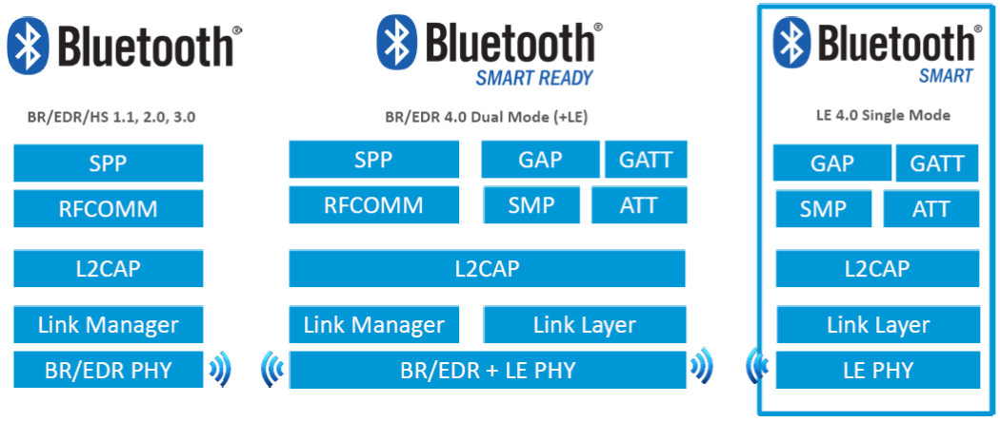
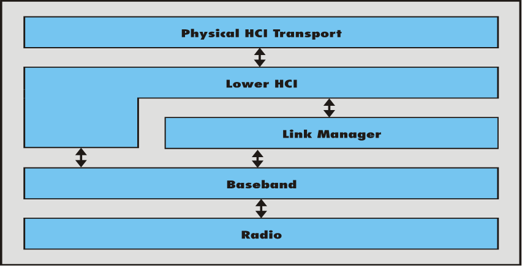
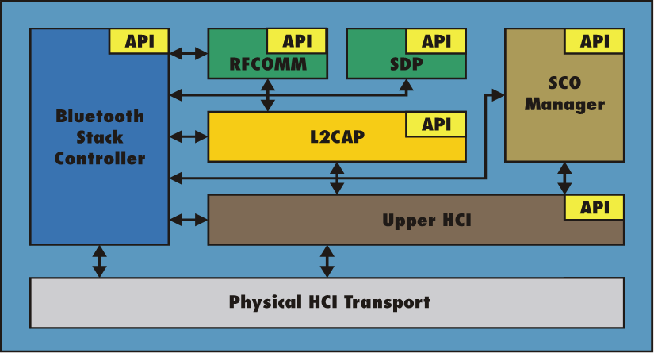
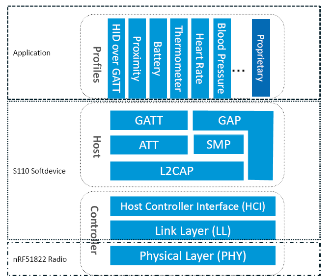
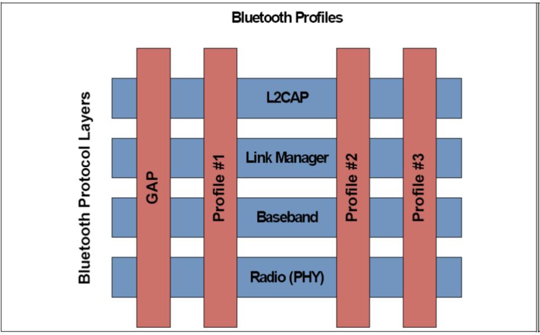
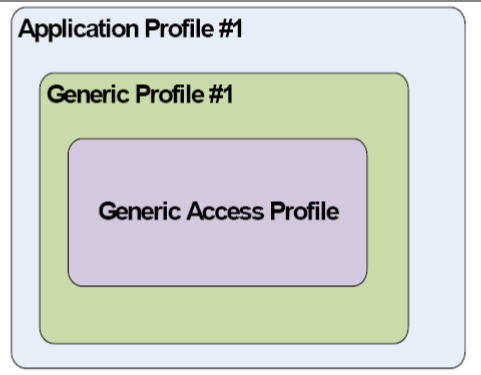
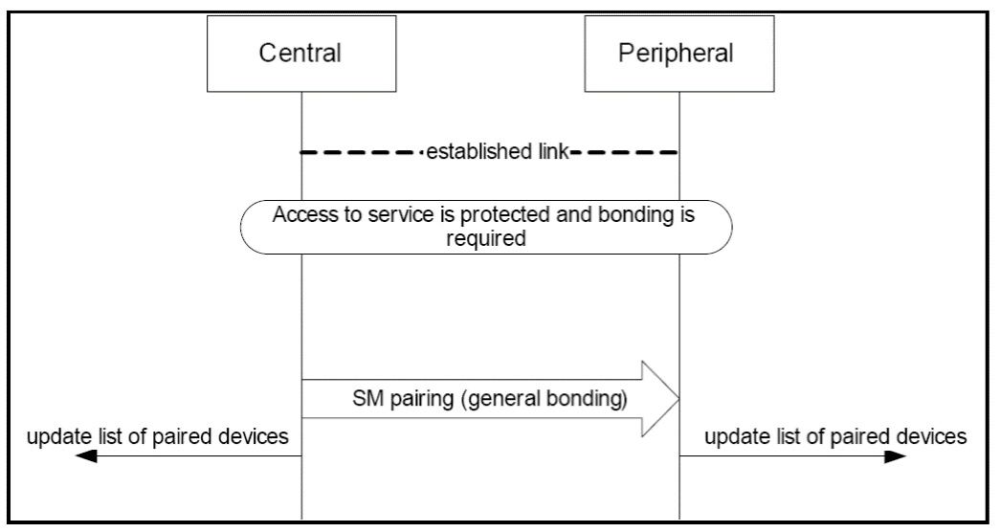
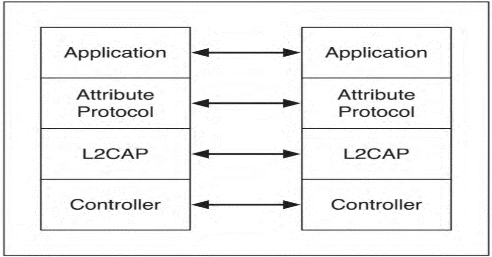
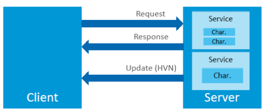

蓝牙学习总结
1 蓝牙协议
1.1 概述
1.1.1 Bluetooth: terminology
| Term | Introduced | Means |
|---|---|---|
| BR | 1.1(2002) | Basic Rates(1 Mbits/s) |
| EDR | 2.0(2004) | Enhanced Date Rates(2 and 3 Mbits/s) |
| HS | 3.0(2009) | High Speed (Alternate MAC/PHY) |
| LE | 4.0(2010) | Low Energy (1 Mbit/s ultra low powser |
| Bluetooth Smart | 4.0 | Single mode, LE-only radio |
| Bluetooth Smart Ready | 4.0 | Dual mode, BR/EDR and LE dual radio |
1.1.2 Bluetooth: configurations

- Bluetooth is target at short-range communication with 2.4GHz Frequency
- Communication Range:
Power Class Transmission Power Level(mW) Advertised Range(m) 1 100 100 2 2.5 10 3 1 1 - Bluetooth uses a radio technology called
frequency-hoppingspread spectrum, which chops up the data being sent and transmits chunks of it on up to79 bands(1 MHz each; centered from 2402 to 2480 MHz) - Bluetooth is a packet-based protocol with a master-slave structure.
- One master may communicate with up to 7 slaves in a piconet; all devices share the master's clock.
- The devices can switch roles, by agreement, and the slave can become the master
1.1.3 Bluetooth Stack
- Lower layers of Bluetooth stack

- Radio: Transceiver operating in 2.4GHz ISM band
- Baseband: Bluetooth link controller which carries out the baseband protocols(如信号编码) and other low-level link routines.
- Link Manger – Used for link set-up and control. The signals are interpreted and filtered out by the Link Manager on the receiving side and are not propagated to higher layers.
- Lower HCI – Host Controller Interface, well defined API to control the Bluetooth module
- Physical HCI Transport – UART, RS232, USB
- Upper layers of Bluetooth stack

- Upper HCI - Host Controller Interface, well defined API to control the Bluetooth module
- L2CAP - Supports higher level protocol multiplexing, packet segmentation and reassembly, and the conveying of quality of service information.
- RFCOMM – Serial port emulation protocol
- SDP – Protocol for locating services provided by or available through a Bluetooth device.
- SCO Manager and Bluetooth Stack Controller are not part of the specification, but generally are components of an upper layer Bluetooth protocol stack.
- Typical System Architecture Today
Lower layers of the stack reside in the Bluetooth hardware (baseband processor and radio) from a silicon or module manufacturer such as TI, Ericsson, Philips, CSR, Taiyo Yuden, Silicon Wave, etc.
Application, profiles, and upper layers of the stack reside on a separate host processor and communication between upper and lower layers of the stack occurs over the HCI interface.
1.1.4 Bluetooth LE: architecture

1.1.5 Device discovery
the process of searching for and detecting nearby Bluetooth devices.
- broadcast a “discovery” message and wait for replies
- Each reply consists of the address of the responding device and an integer identifying the general class of the device
1.2 Profile
Bluetooth programming defines transport protocols and methods of communicating, but it also goes one step further to specify methods of using Bluetooth to accomplish higher level tasks. These methods and specifications are collectively called the Bluetooth Profiles
基于蓝牙的应用程序都是通过Profile来提供或获得彼此的服务，从而实现 设备间的互操作性。
蓝牙Profile定义了蓝牙系统中从PHY到L2CAP各层间所需的功能和特性，也 包括一些非核心规范之外的协议定义的功能和特性。
另外，Profile也定义了应用程序的行为和数据格式。只有当两个设备同时 符合一个Profile的要求，它们之间才能进行互操作。

1.2.1 GAP
GAP即Generic Access Profile，是所有蓝牙设备必须实现的一个Profile， 它定义了一个蓝牙设备的基本要求。
GAP也描述了设备发现，连接建立，安全，认证，关联模型和服务发现的行 为和方法。
任何新实现的Profile都会基于GAP，提供的功能也是GAP所能提供的功能的 超集。
处于最上层的Profile描述了应用程序之间的互操作，称为应用程序Profile。

对于BR/BER类型的蓝牙设备，它定义一个单一的角色，这个角色决定了一个 蓝牙设备的功能（设备怎样发现对方，连接怎样建立，怎样使用安全认证模 型）
对于LE类型的蓝牙设备，定义了4种特别的角色: Broadcaster ， Observer , Peripheral 和 Central 。一个LE设备可以支持所有的 角色，只要底层的FW支持。但是，任何时刻只能充当一种角色。
- Broadcast mode and observation procedure
allow two devices to communicate in a unidirectional connectionless manner using the advertising events.
The broadcast mode provides a method for a device to send connectionless data in advertising events.
- Discovery modes and procedures
Discovery mode
- non-discoverable
- Discoverable
- general discoverable
- limited discoverable (for a limited period of time)
- procedure Only a device in the Central role may support genearal discoverable and limited discoverable procedure.
- Name Discovery Procedure
- obtain the Bluetooth Device Name of a remote connectable device.
- Performed when the complete name is not acquired during discovery procedures.
- The host should established a connection with remote device.
- The host shall read the device name characteristic using the GATT procedure Read Using Characteristic UUID
- When finished , the connection may be terminated.
- CONNECTION MODES AND PROCEDURES
Modes
- Non-connectable mode
- Shall be supported by Peripheral devices.
- Implicitly supported by Central, Receiver, Broadcaster devices.
- Directed connectable mode
- shall accept a connection request from a known peer device
- Performing auto connection establishment procedure or the general connection establishment procedure.
- Only supported by Peripheral devices.
- When connection established ,will enter the non-connectable mode.
- Undirected connectable mode
- shall accept a connection request from a device performing the auto connection establishment procedure or the general connection establishment procedure.
- When connection established ,will enter the non-connectable mode.
Procedures
- Auto connection establishment procedure
- Only supported by Central role devices.
- general connection establishment procedure
- Only supported by Central role devices.
- Selective connection establishment procedure
- Only supported by Central role devices.
- Direct connection establishment procedure
- Only supported by Central role devices.
- Connection Parameter Update procedure
- Only supported by Central and Peripheral role devices.
- Terminate Connection procedure
- Only supported by Central and Peripheral role devices.
- Non-connectable mode
- BONDING MODES AND PROCEDURES
Bonding:
- allows two connected devices to exchange and store security and identity information to create a trusted relationship.
- When the devices store the bonding information, it is known as the phrases ‘devices have bonded’ or ‘a bond is created’.
- 为了访问另一个设备受保护的信息，必须与对方进行配对。
Modes:
- non-bondable mode
- A device doesn’t support pairing is considered to be in non-bondable mode.
- bondable mode
Bonding Procedure

1.2.2 GATT
GATT设计为可供应用程序或其他Profile使用，使得客户端与服务器端能进行通信。
服务器包含了许多属性，GATT Profile定义了如何使用ATT协议来发现，读， 写和获取这些属性的方法，以及配置属性的广播。

GATT定义了两种角色：服务器和客户端
- 客户端发起请求，并接受响应。
- 服务器端接受请求，并发送响应，指示或通知。
- 两种角色可动态变换，即一个设备可以同时充当客户端和服务器端角色。
- GATT和ATT可用于BR/EDR/LE。在LE中，是必须有的。

如果一个设备声称支持GATT Profile，则必须实现其定义的一些能力。
GATT Profile主要处理如下一些场景：
- 交换配置信息（Exchange）
- 发现设备的服务和特征。（Discovery）
- 读取一个特征值。（Read）
- 写入一个特征值。（Write）
- 通知一个特征值。（Notification, broadcast）
- 指示一个特征值。（Indication, unicast）
- 基于GATT的Profile层次结构
GATT Profile指定了Profile数据交换的结构。这个结构定义用于Profile 的基本元素： 服务和特征 。包含在ATT的属性当中。
最顶层是Profile，一个Profile是由一个或多个服务组成的，这些服务是实现某个用例必需的。
一个服务则是由许多特征或其他服务的引用组成的。
每个特征包含一个值和关于这个值的其他信息。
所有的服务和特征以及特征的组件（如值或描述符）包含了Profile数据， 都存储在服务器的属性（Attribute）中。
服务有两种类型：主服务和次服务。主服务提供设备的主要功能，次服务 提供设备的辅助功能。至少被设备上的一个主服务引用。
为保持兼容早期的客户，一个服务定义的后续修改只能增加新的引用服务 或可选的特征，服务定义的行为也不能修改。
服务可用在一个或多个profile中。
1.2.3 HID Service
This service exposes HID reports and other HID data intended for HID Hosts and HID Devices.
This service shall operate over the LE transport only.
HID devices act as a GATT Server.
There are three different types of data transfers
- Input Reports (control data from HID Host to HID Device, such as keypress)
- Output Reports (control data from HID Host to HID Device such as an ‘LED on’ signal )
- Feature Reports (configuration or application-specific data in either direction )
1.2.4 HOGP Profile
HOGP stands for Hid Over Gatt Profile
This means:
- A device with BLE support.
- Suport HID service over BLE protocol stack.
- Using GATT profile.
Participants:
- HID Devices (GATT server )
- HID Hosts (GATT client)
Can be used in BLE device only.
1.2.5 A2DP Profile
A2DP stands for Advanced Audio Distribution Profile
Typical usage is the streaming of music content from a stereo music player to headphones or speakers.
The A2DP focuses on audio streaming .